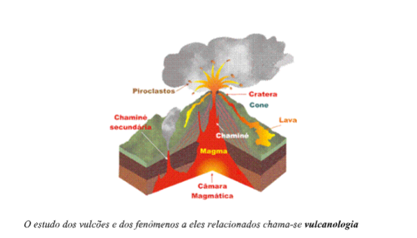
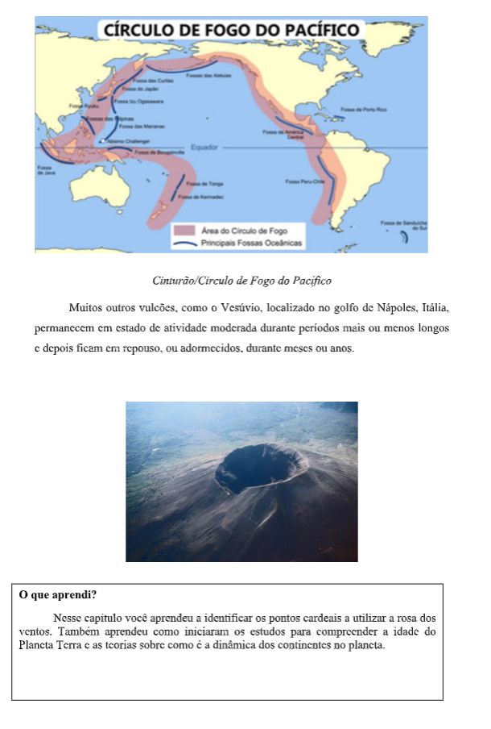

Capítulo 2: Agricultura
Questão:Ao estudar o capítulo você irá poder responder à seguinte questão: Quais são as maneiras de produzir que estão ligadas à agricultura?
Contextualizando – Materiais vindos da agricultura que podem ser utilizados na construção civilO Brasil está prestes a solucionar um grave problema ambiental. A Oryzasil Silicas Naturais, de Itaqui (RS), acaba de mapear o caminho tecnológico que promete dar fim aos 17 milhões de metros cúbicos de cascas de arroz, gerados por ano pelas indústrias de beneficiamento do grão instaladas no Rio Grande do Sul. De difícil degradação, se depositadas no solo, as cascas levam anos para se decompor e virar adubo. E quando utilizadas na geração de energia renovável, a queima das cascas, por sua vez, gera cinzas, outro subproduto sem nenhum valor comercial no Brasil. Para resolver o problema, a Oryzasil foi buscar no mercado alternativas para o aproveitamento desse resíduo. E foi então que passou a desenvolver uma tecnologia que prevê o aproveitamento das cinzas para a obtenção de derivados de silício, empregados desde a fabricação do silicone para o segmento da construção civil, até a produção do pneu verde. Assim, o desafio, agora, é a implementação de uma planta que permita a produção em grande escala, desde a sílica até demais derivados do silício. Ainda em fase piloto, no próximo dia 9 de maio, será inaugurada a planta, que vislumbra a partir de 2020, o processamento de 140 mil toneladas de cascas para produção de energia ao ano, que irão produzir 28 mil toneladas de cinzas, as quais serão convertidas em derivados de silício de alto valor agregado.
O que é agricultura?
Agricultura é uma atividade realizada pelo homem, que utiliza o solo para o plantio e cultivo de plantas. A prática agrícola é muito antiga.
No passado, era comum a agricultura de subsistência, isto é, a maior parte da população cultivava para o seu próprio consumo.
Atualmente, a agricultura é comercial, ou seja, é uma importante atividade econômica que produz alimentos para a população e matérias-primas para as indústrias.
AS CONDIÇÕES NATURAIS E A AGRICULTURAMesmo com a evolução técnica e científica, a atividade agrícola sofre grande influência dos elementos naturais: clima, solo e relevo. Como são seres vivos, os vegetais precisam de certas condições para o seu desenvolvimento e sobrevivência. Assista ao vídeo para ter mais informações:
Há plantas com grande capacidade de adaptação a diferentes tipos de clima, porém existem as que precisam de ambientes quentes e úmidos ou as que precisam de ambientes frios.
Exemplos:
• Nas regiões de baixa latitude (temperaturas elevadas), predominam as lavouras tropicais durante todo o ano.
• Nas regiões de média latitude (temperaturas baixas), encontramos as lavouras temperadas no inverno e no alto verão.
Antes de continuar, assista ao vídeo e faça um pequeno esquema em seu material, abordando os principais aspectos tratados
A pluviosidade (quantidade de chuvas) também é fundamental na agricultura. As estiagens(secas) prolongadas dificultam o plantio e o desenvolvimento dos vegetais. Já as chuvas em excesso podem provocar a perda da safra, a erosão, o empobrecimento do solo e a ocorrência de enchentes.
A produtividade agrícola depende diretamente da fertilidade (boa qualidade) dos solos. • Os solos pobres (pouco férteis) necessitam de adubos que encarecem a produção;
• Os solos pouco espessos (solos rasos, de pouca profundidade) dificultam o plantio e a utilização de máquinas. O relevo também pode interferir no tipo de cultivo. Nas áreas montanhosas, para evitar a erosão, são construídos terraços (proteções para as chuvas não carregarem a terra) e são plantadas culturas permanentes, ou seja, que não precisam ser retiradas totalmente: colhem-se os frutos e a árvore permanece, ficando o solo com as suas raízes, o que ajuda a evitar a erosão. Essas áreas também dificultam a utilização de máquinas.
